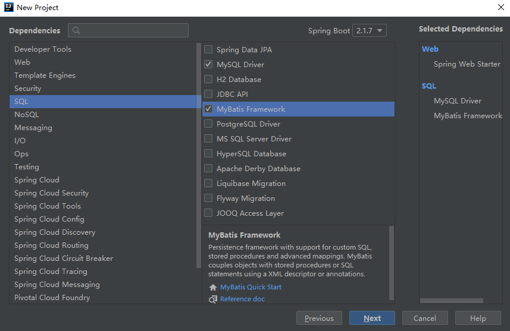
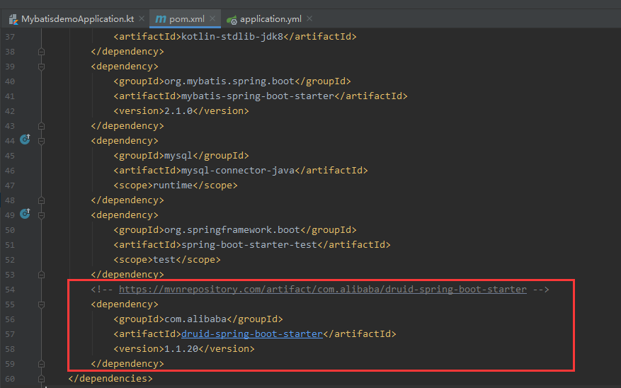
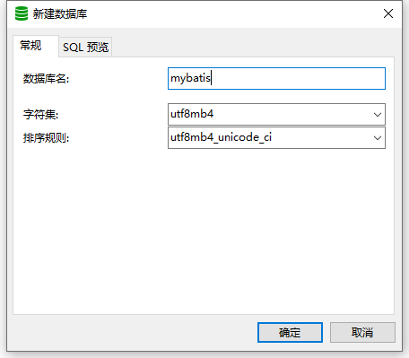
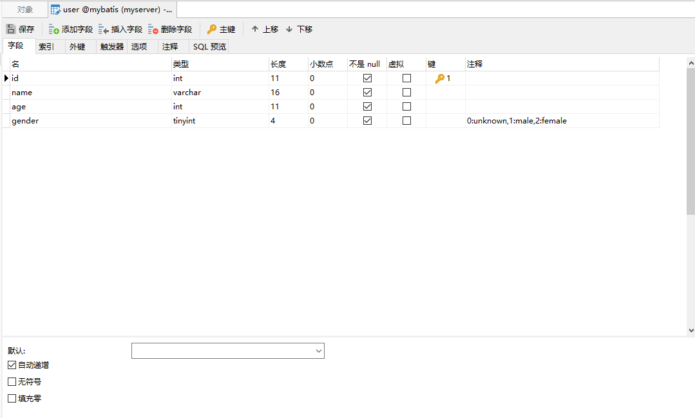
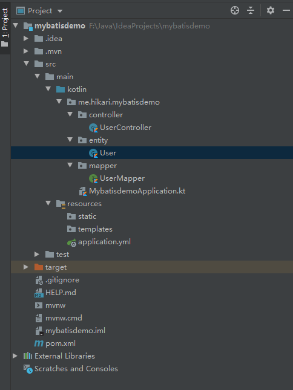
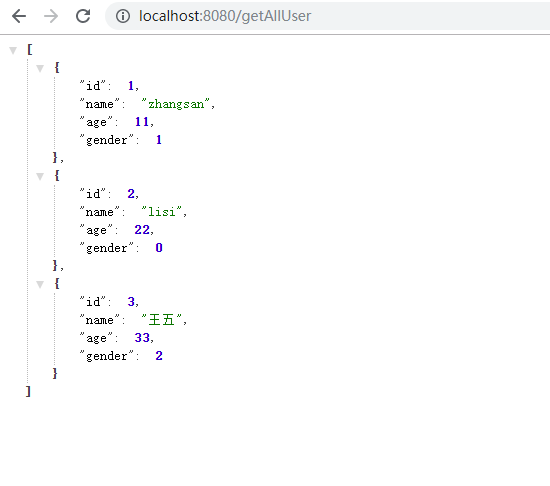

瞎扯两句
哈喽哈喽哈喽哈喽大家好~ 这里是刺猬(误)，这里其实是 Kotlin+Springboot 系列教程的第二篇——整合 mybatis，只是最近在看《乐队的夏天》，对刺猬这个乐队有点喜欢嘿嘿。
正文来啦
首先，和上篇文章所写步骤一样，在 idea 用 File → New → project 创建新的项目，唯一区别的地方在于选择需要的 dependencies 的时候要把下面的 MySQL Driver 和 MyBatis Framwork 勾上。

由于要使用 Druid 作为连接池的实现，我们还需要导入相应的依赖。打开 pom.xml，在里面添加如下内容:

之后创建此次需要连接的数据库，

然后简单创建测试用的 user 表，然后随便往里面插几条数据。

接着，打开我们项目的配置文件，这里我用的是 application.yml 作为项目配置文件，参考配置如下：
由于我用的数据库环境是 mysql-8.0.17，所以 jdbc 的 driver 是带 cj 的。如果你用的是5.x.x的版本，driver-class-name 应是 com.mysql.jdbc.Driver。
1
2
3
4
5
6
7
8
9
10
11
12
13
14
15
16
17
18
19
20
21
22
23
24
25
26
27
28
29
30
31
32
33
34
35
36
37
38
39
40
41
42
43
44
45
46
47
48
49
50
51
52
53
|
spring:
datasource:
url: jdbc:mysql://ip:port/dbName?serverTimezone=GMT%2B8
username: your username
password: your password
driver-class-name: com.mysql.cj.jdbc.Driver
type: com.alibaba.druid.pool.DruidDataSource
druid:
initial-size: 5
min-idle: 5
max-active: 20
max-wait: 60000
test-while-idle: true
time-between-eviction-runs-millis: 60000
min-evictable-idle-time-millis: 30000
validation-query: select 'x'
test-on-borrow: false
test-on-return: false
pool-prepared-statements: true
max-pool-prepared-statement-per-connection-size: 20
filters: stat,wall
connection-properties: druid.stat.mergeSql=true;druid.stat.slowSqlMillis=5000
use-global-data-source-stat: true
stat-view-servlet:
enabled: true
login-username: admin
login-password: admin
web-stat-filter:
enabled: true
url-pattern: /*
exclusions: "*.js,*.gif,*.jpg,*.png,*.css,*.ico,/druid/*"
|
至此，基本的环境就搭建完成啦，接下来就是代码的编写了。
按照下图先把文件创建好

然后编写 User,
1
2
3
4
| data class User(var id: Long,
var name: String,
var age: Int,
var gender: Int)
|
接着编写 UserMapper,记得一定要加 Mapper注解，这样 Spring Boot 才能扫描到这个 Mapper。
1
2
3
4
5
6
| @Mapper
interface UserMapper {
@Select("select * from user")
fun getAllUsers(): MutableList<User>
}
|
最后编写测试用的 UserController。
1
2
3
4
5
6
7
8
9
10
11
| @RestController
class UserController {
@Resource
lateinit var userMapper: UserMapper
@GetMapping("getAllUser")
fun getAllUsers(): MutableList<User> {
return userMapper.getAllUsers()
}
}
|
运行程序，访问 http://localhost:8000/getAllUser ,可以看到已经能成功访问到 mysql 里面的数据了,同时也可以打开 http://localhost:8000/druid 查看 Druid 的监控页面。

这样，一个简单的整合了 mybatis 的 Spring Boot 框架就搭建完毕了。